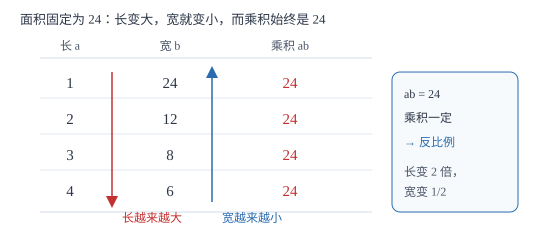

正比例与反比例关系
判断两个量成什么关系只看一句话：比值一定还是乘积一定。乘积一定时，一个量扩大几倍，另一个量就缩小到几分之一。
| 所属主题 | 代数式 |
|---|---|
| 所属模块 | 代数 |
| 课标学段 | 第四学段（7~9 年级） |
| 前置知识 | 列代数式表示数量关系 |
| 核心素养 | 抽象能力推理能力 |
教材定位
人民教育出版社《人教版（2024版）义务教育教科书·数学》
七年级上册第3章 代数式3.1 列代数式表示数量关系
对应七上 3.1 第 3 课时「反比例关系」。教材以正比例与反比例成对引入，用「乘积不变」突破「一个变大另一个就变小」的感性认识；本篇把这条判据写成反证，并单列「和一定不是反比例」这个最高频的误判。
说明
两个相关联的量，一个变化另一个也跟着变化。若它们的比值一定（y/x=k，k≠ 0），叫成正比例的量；若它们的乘积一定（xy=k，k≠ 0），叫成反比例的量。k 是常数，由具体情境决定，不同问题的 k 一般不同。
反比例的本质是「总量固定，此消彼长」。路程固定时，速度越快时间越短，且 vt=s 恒定；总价固定时，单价越高买到的数量越少，单价与数量的乘积恒为总价。写成式子就是 xy=k，也可以变形为 y=k/x，看到「一个量 = 常数 ÷ 另一个量」就应想到反比例。
判断方法只有一条：先写出两个量的关系式，再看「相除」得常数还是「相乘」得常数。不能只看「一个变大另一个变小」——那只是反比例的外在表现，不是判据。
使用场景
物理与工程里最常见：路程一定时速度与时间成反比例；工作量一定时效率与时间成反比例；杠杆平衡时 F_1L_1=F_2L_2，力与力臂成反比例。
经济与几何情境：总价一定时单价与数量成反比例；总钱数一定时，单价越高能买的本数越少。长方形面积一定时，长与宽成反比例；三角形面积一定时，底与高成反比例。
注意点
反比例要求 k≠ 0。若乘积恒为 0，说明其中一个量始终是 0，这不是反比例。
「一个变大另一个变小」不足以判定反比例。y=12-x 中 x 变大 y 变小，但乘积 xy 从 11 变到 20，不是常数，所以不成反比例。
正比例要求比值一定（y/x=k）；反比例中两个量都不能为 0，因为除数不能为 0。这一点决定了反比例的图象永远不与坐标轴相交（八下学函数时会看到）。
证明

图 1：总面积固定为 24，长与宽的乘积始终是 24——一个扩大几倍，另一个就缩小到几分之一
证明
结论 1若 xy=k（k≠ 0），则 x 变为原来的 n 倍时，y 必变为原来的 1/n。
设变化前 xy=k，变化后 x'=nx（n≠ 0）。代入关系式得 x'y'=k，即 nx\cdot y'=k。又 xy=k，两式相除得 nx y'/xy=k/k=1，即 n\cdoty'/y=1，所以 y'=y/n。这说明扩大与缩小是严格配套的，不是「大一点就小一点」的模糊关系。
关键一步依据是：乘积恒定时，两个因子的变化倍数必须互为倒数，乘积才能保持不变。
结论 2判断反比例必须验证乘积是否为常数，「一个增大另一个减小」不能作为判据。
取 y=12-x。当 x 从 1 增到 2，y 从 11 减到 10，满足「增大而减小」；但乘积 xy 从 11 变为 20，不是常数。若按「一增一减」就判反比例，会把这个式子误判。反过来，xy=12 时 x=1,y=12 与 x=2,y=6，乘积都是 12，才符合定义。
关键一步依据是：定义要求的是乘积一定这个定量条件，增减方向只是它的外在表现。
结论 3「和为定值」与「积为定值」是两件不同的事，只有后者才是反比例。
长方形周长一定，给的是 a+b 为常数（和一定）。取和为 10：1× 9=9、2× 8=16、3× 7=21、5× 5=25，乘积在变，不是常数，所以长与宽不成反比例。若改为面积一定，取积为 24：1× 24、2× 12、3× 8、4× 6，乘积恒为 24，此时长与宽成反比例。
关键一步依据是：反比例的定义是积为常数；条件给的是和，就不能推出积恒定。
动手实验
拿 24 个小方块摆长方形，长和宽都取整数个。记录所有摆法：1× 24、2× 12、3× 8、4× 6，算一算每组的长乘宽，发现都是 24。再看长从 1 增到 2 时宽从 24 减到 12（缩到一半），长从 2 增到 4（2 倍）时宽从 12 减到 6（也是缩到一半）。这就是反比例的「乘积不变、倍数互为倒数」。
解题思路
判断比例关系四步。第一步确认两个量相关联：一个变了另一个确实跟着变，且这种联动不是巧合。第二步写关系式：把题目给的公式或数量关系写成等式，如 vt=s、单价 × 数量 = 总价。第三步定常数：找出题目里固定不变的那个量，把它单独放到等号一边。第四步看结构：等号一边是两个量的商且为常数，是正比例；是两个量的积且为常数，是反比例；都不是，就不成比例（如 y=x+3）。
做完还要检查取值范围：反比例中两个量都不能为 0；实际问题中往往还要求为正数（速度、时间、人数）。把限制写进答案，可以避免「算出来是负数」的荒谬结果。
按场景的例题
例 1（场景：物理情境） 一段固定长度的公路
一段公路长 120 千米。汽车行驶的速度 v（千米/时）与所需时间 t（时）成什么关系？若速度从 60 提高到 80，时间怎么变？
解：关系式为 vt=120，乘积一定（120），所以 v 与 t 成反比例。v=60 时 t=2；v=80 时 t=1.5。速度变为原来的 4/3，时间变为原来的 3/4，两个倍数互为倒数。
答：成反比例（vt=120）；时间由 2 小时减为 1.5 小时。
例 2（场景：销售与利润） 用固定金额买笔记本
用 240 元买笔记本，单价 p 元与能买的本数 n 成什么关系？单价涨到原来的 1.5 倍时，本数怎么变？
解：pn=240，乘积一定，成反比例。单价变为 1.5p，则 n'=240/1.5p=2/3n，本数变为原来的 2/3。验证：p=8 时 n=30；p=12 时 n=20，确实从 30 减到 20。
答：成反比例（pn=240）；本数变为原来的 2/3。
例 3（场景：测量与工程） 一项工程量固定的任务
一项工程总量固定。若每天完成 x 个单位，需要 y 天。已知每天完成 30 个单位时需 12 天，问每天完成 40 个单位时需几天？
解：总量 =30× 12=360 个单位，关系式 xy=360，成反比例。x=40 时 y=360/40=9 天。也可用倍数法：效率变为原来的 4/3，天数变为 3/4，12×3/4=9。
答：需 9 天。
例 4（场景：数据调查） 弹簧挂码实验记录
下表是某小组记录的弹簧总长：挂 1 个钩码长 12 厘米，挂 2 个长 14 厘米，挂 3 个长 16 厘米，挂 4 个长 18 厘米。钩码个数与弹簧总长成什么关系？
解：设钩码个数 n、总长 L。每次增加 2 厘米，可写成 L=2n+10。检验：L/n 依次为 12、7、5.33、4.5，不是常数，不成正比例；nL 依次为 12、28、48、72，也不是常数，不成反比例。它是「一次关系」，不是比例关系。
答：L=2n+10，既不成正比例也不成反比例。
常用推论
正比例 y=kx 与反比例 xy=k，都可以写成「一个量 = 常数 × 另一个量」或「一个量 = 常数 ÷ 另一个量」；看到除法结构就要想到反比例。
倍数法是反比例的快捷算法：一个量变为 n 倍，另一个量必变为 1/n，不必每次都求出 k。
长方形面积一定时，长与宽成反比例；周长一定时，长与宽的和一定，此时它们不成反比例——这是最常见的陷阱。
易错点
错看到「一个变大另一个变小」就判定反比例。
为什么错把必要条件当成了充分条件。y=12-x 也满足一增一减，但乘积不是常数。
正确必须验证乘积是否为常数：xy=12 才是反比例，x+y=12 不是。
错认为「长方形周长一定时，长与宽成反比例」。
为什么错周长一定给的是 2(a+b)=C，即和一定，不是积一定。
正确周长一定时长与宽不成反比例；只有面积一定（ab=S）时，长与宽才成反比例。
错在反比例关系里令 x=0 去求 y。
为什么错忽略了 k≠ 0 与除数不能为 0 的条件。y=k/x 中 x 不能取 0。
正确反比例中两个量都不能为 0；实际问题里通常还要满足为正数。
直观理解
把总量想成一块固定大小的蛋糕。人越多，每人分到的越少；人数翻倍，每人就只剩一半——这就是反比例：总数不变，两边此消彼长。正比例则像复印：份数翻倍，总页数也翻倍，比例始终一样。判断时只要问一句：固定的到底是「倍数」还是「总量」？